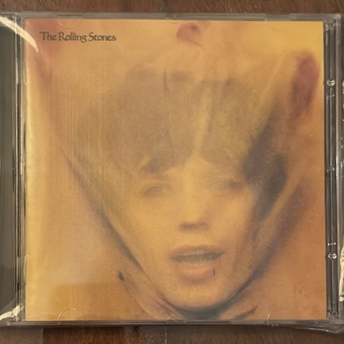

Goats Head Soup

Artista: The Rolling Stones
Año de edición: 1973
¿Por qué está en mi colección? Este CD tiene un clima setentoso súper cálido y melancólico. Todo el mundo lo conoce por la balada "Angie", y a mí me encanta también por el sonido crudo y oscuro que lograron grabando en Jamaica. El arte de la portada, con la cara de Mick Jagger envuelta en un velo, le da un toque misterioso.
Volver a la página principal